Prediction w/ tidyModels

PART 1: What are tidyModels?
A modeling framework!
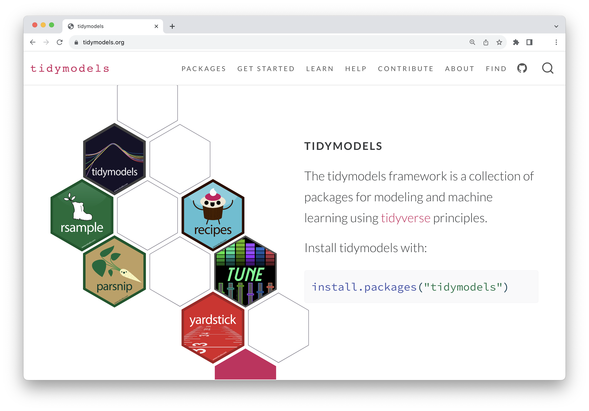
```{r load-tm}
#| message: true
library(tidymodels)
```#> ── Attaching packages ──────────────────────────── tidymodels 1.2.0 ──#> ✔ broom 1.0.5 ✔ rsample 1.2.1
#> ✔ dials 1.3.0 ✔ tibble 3.2.1
#> ✔ dplyr 1.1.4 ✔ tidyr 1.3.1
#> ✔ infer 1.0.7 ✔ tune 1.2.1
#> ✔ modeldata 1.4.0 ✔ workflows 1.1.4
#> ✔ parsnip 1.2.1 ✔ workflowsets 1.1.0
#> ✔ purrr 1.0.2 ✔ yardstick 1.3.1
#> ✔ recipes 1.0.10#> ── Conflicts ─────────────────────────────── tidymodels_conflicts() ──
#> ✖ purrr::discard() masks scales::discard()
#> ✖ dplyr::filter() masks stats::filter()
#> ✖ dplyr::lag() masks stats::lag()
#> ✖ recipes::step() masks stats::step()
#> • Use suppressPackageStartupMessages() to eliminate package startup messagesWhat we will be working on today
- Minimal version of predictive modeling process
Machine learning as a predictive modeling process


Your turn

How are statistics and machine learning related?; How are they different?
They are sometimes thought of as capturing “two cultures:” Model first vs. data first; or inference vs. prediction
The whole game

Splitting data (aka your data budget) and building a decision tree
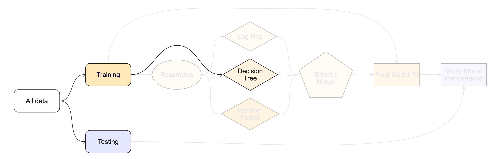
Cross validation, i.e., resampling
- Comparing multiple model types and evaluating to identify best one

Creating a final model fit object and doing a final test
Data
Taxi trips in Chicago in 2022

The city of Chicago releases anonymized trip-level data on taxi trips in the city. We will use a dataset that pulls a sample of 10,000 rides occurring in early 2022.
Type ?taxi to learn more about this dataset, including references.
```{r}
library(tidymodels)
``````{r}
glimpse(taxi)
```#> Rows: 10,000
#> Columns: 7
#> $ tip <fct> yes, yes, yes, yes, yes, yes, yes, yes, yes, yes, yes, yes, y…
#> $ distance <dbl> 17.19, 0.88, 18.11, 20.70, 12.23, 0.94, 17.47, 17.67, 1.85, 1…
#> $ company <fct> Chicago Independents, City Service, other, Chicago Independen…
#> $ local <fct> no, yes, no, no, no, yes, no, no, no, no, no, no, no, yes, no…
#> $ dow <fct> Thu, Thu, Mon, Mon, Sun, Sat, Fri, Sun, Fri, Tue, Tue, Sun, W…
#> $ month <fct> Feb, Mar, Feb, Apr, Mar, Apr, Mar, Jan, Apr, Mar, Mar, Apr, A…
#> $ hour <int> 16, 8, 18, 8, 21, 23, 12, 6, 12, 14, 18, 11, 12, 19, 17, 13, …tip: Whether the rider left a tip. A factor with levels “yes” and “no”.
distance: The trip distance, in odometer miles.
company: The taxi company, as a factor. Companies that occurred few times were binned as “other”.
local: Whether the trip started in the same community area as it began. See the source data for community area values.
dow: The day of the week in which the trip began, as a factor.
month: The month in which the trip began, as a factor.
hour: The hour of the day in which the trip began, as a numeric.
Checklist for predictors
- Is it ethical to use this variable? (Or even legal?)
- Will this variable be available at prediction time?
- Does this variable contribute to explainability?
PART 2: Data Budget

Data splitting and spending
Always have a separate piece of data that can contradict what you believe!
For machine learning, we typically split data into training and test sets:
- The training set is used to estimate model parameters.
- The test set is used to find an independent assessment of model performance. Do not 🚫 use the test set during training. The test set is precious 💎
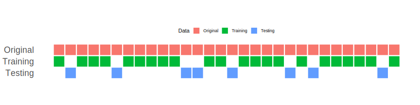
Spending too much data in training prevents us from computing a good assessment of predictive performance.
Spending too much data in testing prevents us from computing a good estimate of model parameters.
Your turn
When is a good time to split your data?
The initial split
```{r taxi-split}
set.seed(123)
taxi_split <- initial_split(taxi)
taxi_split
```#> <Training/Testing/Total>
#> <7500/2500/10000>This function uses a good default, but this depends on your specific goal/data. There are more powerful ways of splitting, like stratification, that we will get into later.
set.seed()?
To create that split of the data, R generates “pseudo-random” numbers: while they are made to behave like random numbers, their generation is deterministic give a “seed”.
This allows us to reproduce results by setting that seed.
Which seed you pick doesn’t matter, as long as you don’t try a bunch of seeds and pick the one that gives you the best performance.
Accessing the data
```{r}
#| label: taxi-train-test
taxi_train <- training(taxi_split)
taxi_test <- testing(taxi_split)
```The training set
```{r}
#| label: taxi-train
taxi_train
```#> # A tibble: 7,500 × 7
#> tip distance company local dow month hour
#> <fct> <dbl> <fct> <fct> <fct> <fct> <int>
#> 1 yes 0.7 Taxi Affiliation Services yes Tue Mar 18
#> 2 yes 0.99 Sun Taxi yes Tue Jan 8
#> 3 yes 1.78 other no Sat Mar 22
#> 4 yes 0 Taxi Affiliation Services yes Wed Apr 15
#> 5 yes 0 Taxi Affiliation Services no Sun Jan 21
#> 6 yes 2.3 other no Sat Apr 21
#> 7 yes 6.35 Sun Taxi no Wed Mar 16
#> 8 yes 2.79 other no Sun Feb 14
#> 9 yes 16.6 other no Sun Apr 18
#> 10 yes 0.02 Chicago Independents yes Sun Apr 15
#> # ℹ 7,490 more rowsThe test set
🙈
There are 2500 rows and 7 columns in the test set.
Your turn
Split your data so 20% is held out for the test set and show the first 10 rows of so of the training data
Try out different values in
set.seed()to see how the results change.
Exploratory data analysis
As you know by now, before we get too far into our data analysis, we want to do some exploration with visualizations. So lets get to it.
Your turn
What’s the distribution of the outcome,
tip?What’s the distribution of numeric variables like
distance?How does
tipdiffer across the categorical variables?
For taxi-tip-counts, what about using geom_bar() with just tip?
For taxi-tip-by-distance, I would recommend geom_histograms and play around with the bin size. You will also want to incorporate facet_grid.
For taxi-tip-by-hour, I would plot making use of fill= and geom_bar
For taxi-tip-by-local, I’ll leave this one up to you, but add a colore palette for color-blind people.
Split smarter
Based on our EDA, we know that the source data contains fewer "no" tip values than "yes". We want to make sure we allot equal proportions of those responses so that both the training and testing data have enough of each to give accurate estimates.
Stratified sampling would split within response values
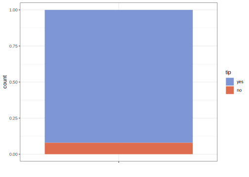
- For stratification involving regression, determine the quartiles of the data set and sample within those artificial groups
- For time series, we often use the most recent data as the test set
Your turn
Go back and modify your earlier code where you split the data to stratify by tip
PART 3: Fitting a model

Do it the tidymodels way
- Choose a model
- Specify an engine
- Set the mode
Choose a model
The model type differentiates basic modeling approaches, such as linear regression, logistic regression, linear support vector machines, etc.
All available models are listed at https://www.tidymodels.org/find/parsnip/
How about we start with a good ol’ linear regression model?
```{r logistic-reg}
linear_reg()
```#> Linear Regression Model Specification (regression)
#>
#> Computational engine: lmSpecify an engine
Question: How many ways are there to fit a linear model in R?
Lots of ways!
lmfor linear model (default)glmfor generalized linear modelglmnetfor regularized regressionkerasfor regression using TensorFlowstanfor Bayesian regressionsparkfor large data sets
The computational engine indicates how the model is fit, such as with a specific R package implementation or even methods outside of R like Keras or Stan.
```{r logistic-reg-glmnet}
linear_reg() %>%
set_engine("glm", family = stats::poisson(link = "log"))
```#> Linear Regression Model Specification (regression)
#>
#> Engine-Specific Arguments:
#> family = stats::poisson(link = "log")
#>
#> Computational engine: glm```{r logistic-reg-stan}
linear_reg() %>%
set_engine("stan")
```#> Linear Regression Model Specification (regression)
#>
#> Computational engine: stanSet the mode
The mode denotes in what kind of modeling context it will be used (most commonly, classification or regression)
Note that some models have a default mode, some do not
```{r decision-tree}
decision_tree()
```#> Decision Tree Model Specification (unknown mode)
#>
#> Computational engine: rpart```{r decision-tree-2}
decision_tree() %>%
set_mode("classification")
```#> Decision Tree Model Specification (classification)
#>
#> Computational engine: rpartYour turn
Copy the chunk below and edit the code to create a logistic regression model
```{r}
#| eval: false
# Model
linear_reg()
# Engine
linear_reg() %>%
set_engine("glmnet")
# Mode (some models have a default mode, others don't)
decision_tree() %>%
set_mode("regression")
```Models we’ll be using today
- Logistic regression (you)
- Decision trees (me)
Logistic regression
The concept of odds and probability:
The probability of some event happening can be expressed as a value between 0 and 1
If the probability of an event occurring is \({p}\), the odds of an event occurring can be expressed as \(\frac{p}{1 - p}\)
“If there is a 75% chance (or 0.75 probability) that it will rain today, then… the odds of it raining are 3 to 1, meaning that it is 3 times more likely to rain than not.”
From odds to log-odds:
It’s challenging to work with odds in mathematical modeling, especially when there are multiple factors that might affect an outcome
This is why we take the logarithm of the odds which puts it on a scale that is easier to work with
The Logistic Regression Equation:
\(log(\frac{p}{1 - p}) = \beta_0 + \beta_1\cdot \text{A}\)
\(log(\frac{p}{1 - p})\) is the log-odds (or the logit) of the probability of our event of interest (e.g., getting a tip)
\(\beta_0\) is the intercept, which represents the log-odds of the event when predictor A is zero
\(\beta_1\cdot \text{A}\) is the slope of coefficient for predictor
A, indicating how much the log-odds of the event changes with a one-unit change inA
It is common to convert the log-odds units into what is called an odds ratio (OR)
Relating this back to taxi’s and tips
We want to predict whether someone will tip (“one”) or not based on the trip distance, in odometer meters (
A).\(\beta_0\) would represent the log-odds of receiving a tip with zero distance
\(\beta_1\) shows how the log-odds of receiving a tip with each additional meter in distance
Maybe as distance increases, the probability of getting a tip increases? (but not linearly- there are diminishing returns after a certain point)
A possibly helpful visual
Lets simulate a dataset of 500 observations with a single predictor
Ausing our logistic regression equation. We ensure that the log-odds of the binary outcome (classwith levels “zero” and “one”) increases with respect toAwith an intercept of.1and a slope of2.Estimate the probability (converting log-odds to probabilities) of the “one” class for different values of
Aand plot these (Avalues are binned in 0.5 increments; error bars show the confidence intervals for estimates)The visual demonstrates the concept of the odds and probabilities changing in a non-linear fashion across the range of
A, a key concept in logistic regression.
What a logistic regression is doing is trying to fit this sort of sigmoid line to separate the two classes in an outcome.
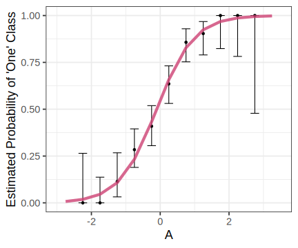
Decision trees
An analogy
- Let’s play 20 questions: I’m thinking of a person, place, or thing. Guess it with asking “yes” or “no” questions
A slightly more formal characterization
- A decision tree is a flowchart-like tree structure consisting of splits or if/then statements based on predictors
But to explain, visualizations are best for decision trees
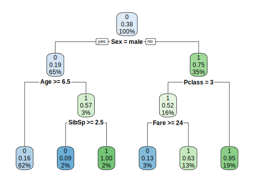
0 corresponds to “Did Not Survive”; 1 corresponds to “Survived”
Pclass: Passenger Class. This is a categorical feature indicating the class of travel of the passenger aboard the Titanic. It typically has three categories: - 1 for first-class (the highest class), - 2 for second-class, - 3 for third-class (the lowest class).
Sex: The sex of the passenger (male or female). This is a binary categorical feature.
Age: The age of the passenger. This is a continuous numerical feature.
SibSp: The number of siblings or spouses the passenger had aboard the Titanic. This is a discrete numerical feature.
Parch: The number of parents or children the passenger had aboard the Titanic. This is also a discrete numerical feature. Note that some relations, like nannies or friends, may not be included in this count.
Fare: The amount of money the passenger paid for the ticket. This is a continuous numerical feature.
A few things to keep in mind
A tree chooses a feature and a split point (e.g., if
Age >= 6.5) to partition the data into subsets that are as homogeneous “pure” as possible (meaning that the node contains data points from predominantly one class)- Just know there are measures for evaluating the “purity” of a node, e.g., Gini Impurity, Entropy, Classification Error
This process is repeated recursively, forming a tree structure until certain stopping criteria are met (e.g., when a node has a small number of observations, some maximum depth).
Trees are also pruned to reduce its complexity
Another possibly helpful visual
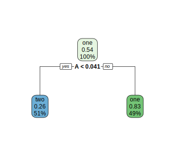
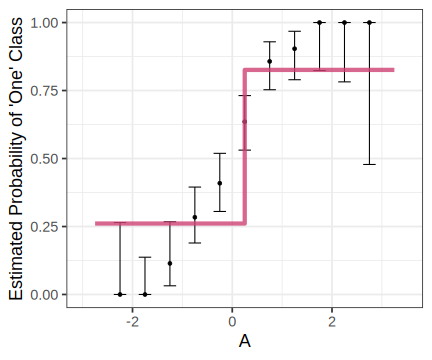

Model Workflows
In tidyModels, we use something called a workflow to streamline our model-building process. Think of a workflow as a ‘recipe’ that combines data preprocessing and modeling steps into one neat package. This approach ensures that everything needed for our model to work — from preparing the data to making predictions — is bundled together.
Let’s break down what each part of a workflow does and why it’s helpful.
What is a Workflow?
A workflow in tidyModels consists of two main parts:
Preprocessor: This handles all the data preparation tasks.
Model: This is where we specify the type of model we want to fit to our data.
Step 1: The Preprocessor
The preprocessor is responsible for preparing our data before it gets to the model. This can be as simple or complex as needed:
For straightforward tasks, we might use a simple formula like y ~ x1 + x2, which just tells the model what our target (y) and predictor variables (x1, x2) are.
For more complex tasks, we can use a recipe. Recipes are powerful because they let us add specific preprocessing steps like:
- Removing variables with no variance,
- Converting categorical variables into numeric ‘dummy’ variables,
- Handling missing data by filling in or categorizing NA values,
- Applying advanced techniques like PCA (Principal Component Analysis) to reduce the number of features
With recipes, we have a lot of flexibility in how we transform and prepare our data.
Step 2: The Model
Next, we specify the model we want to fit. This could be anything from a linear regression to a decision tree. In tidyModels, we can easily swap out different model types within the workflow without changing the preprocessing steps, allowing us to experiment with different approaches.
Why Use a Workflow?
Consistency and Reproducibility: When we apply a workflow to new data, it automatically uses the same preprocessing steps as with the training data. This consistency is important because it prevents any mismatch between training and testing data, helping us achieve more reliable results.
Better Organization: If you’re experimenting with multiple models, workflows make it easier to keep track of each model’s steps. Rather than manually re-running preprocessing each time, you have a ready-to-use workflow for each model, keeping things organized and clear.
Improved Handling of New Data: When we bring in new data that has slightly different values (e.g., new categories in a factor), workflows manage these changes more gracefully than base R. This makes workflows especially helpful in real-world applications where incoming data can vary.
A model workflow
```{r tree-wflow}
# Step 1: Specify the model with desired parameters
tree_spec <-
decision_tree(cost_complexity = 0.002) %>% # Define model type and complexity
set_mode("classification") # Set mode to "classification" for binary outcomes
# Step 2: Build the workflow
tree_wflow <- workflow() %>%
add_formula(tip ~ .) %>% # Add the formula defining target and predictors
add_model(tree_spec) # Attach the specified model
# Step 3: Fit the workflow to training data
tree_fit <-
tree_wflow %>%
fit(data = taxi_train) # Fit the workflow to the training dataset
```“Shortcut” by specifying the preprocessor and model specs directly in the workflow() call:
workflow(tip ~ ., tree_spec) %>%
fit(data = taxi_train) Your turn
Fill out the chunk below to create a workflow for a logistic regression model
```{r logi-wflow}
# Step 1: Specify the model with desired parameters
# Here, create a logistic regression model specification
# Set the mode to "classification" since we're predicting a binary outcome
### logi_spec <- ...
# Step 2: Build the workflow
# Initialize a workflow object
# Add the formula (e.g., tip ~ .) to specify the target and predictors
# Attach the logistic regression model specified in Step 1
### logi_wflow <- ..
# Step 3: Fit the workflow to training data
# Use the fit() function to apply the workflow to the training data (e.g., taxi_train)
### logi_fit <- ...
```
Pre-processing: Adding “recipes”
- Hypothetical additions just for illustrative purposes
```{r}
#| eval: false
# Define a preprocessing recipe with various steps
tree_rec <-
step_date(some_var1, features = c("dow", "month", "year")) %>% # Extract date features like day of week, month, and year from a date variable
step_rm(some_var1) %>% # Remove the original date variable after extracting features
step_dummy(all_nominal_predictors()) %>% # Convert categorical predictors into dummy (one-hot encoded) variables
step_zv(all_predictors()) %>% # Remove any predictors with zero variance (i.e., predictors that are constant)
step_normalize(all_numeric_predictors()) %>% # Normalize all numeric predictors to have mean 0 and standard deviation 1
step_pca(all_numeric_predictors()) # Apply Principal Component Analysis (PCA) to reduce dimensionality of numeric predictors
# Build the workflow by combining the recipe and model
tree_wflow <- workflow() %>%
add_formula(tip ~ .) %>% # Specify the formula for the target variable (tip) and predictors (all other columns)
add_recipe(tree_rec) %>% # Add the preprocessing recipe defined above
add_model(tree_spec) # Attach the specified model (e.g., decision tree model) to the workflow
```- Visit https://www.tidymodels.org/find/recipes/ for details on all possible recipes
Recap so far
Alright, let’s take a moment to sum up what we covered today.
We created a workflow for a decision tree model to predict tips. Here’s a reminder of what each part does:
tree_fit: This is our final, trained decision tree model. We built it by:- Specifying a decision tree model with classification mode.
- Using a workflow to package the preprocessing steps (formula and recipe) and model together.
- Fitting this workflow to the training dataset (
taxi_train), resulting intree_fit.
Dataset Reminder — taxi_test:
taxi_testis our test dataset that we held out during training.- We’ll use
taxi_testto evaluate how welltree_fitperforms on new, unseen data.
How do you understand your new tree_fit model?
Predict with your model
predict(logi_fit, new_data = taxi_test)
```{r}
predict(tree_fit, new_data = taxi_test)
```#> # A tibble: 2,000 × 1
#> .pred_class
#> <fct>
#> 1 yes
#> 2 yes
#> 3 yes
#> 4 yes
#> 5 yes
#> 6 yes
#> 7 yes
#> 8 yes
#> 9 yes
#> 10 yes
#> # ℹ 1,990 more rows```{r}
augment(tree_fit, new_data = taxi_test)
```#> # A tibble: 2,000 × 10
#> .pred_class .pred_yes .pred_no tip distance company local dow month hour
#> <fct> <dbl> <dbl> <fct> <dbl> <fct> <fct> <fct> <fct> <int>
#> 1 yes 0.967 0.0333 yes 20.7 Chicag… no Mon Apr 8
#> 2 yes 0.917 0.0830 yes 1.47 City S… no Tue Mar 14
#> 3 yes 0.917 0.0830 yes 1 Taxi A… no Mon Feb 18
#> 4 yes 0.917 0.0830 yes 1.91 Flash … no Wed Apr 15
#> 5 yes 0.967 0.0333 yes 17.2 City S… no Mon Apr 9
#> 6 yes 0.967 0.0333 yes 17.8 City S… no Mon Mar 9
#> 7 yes 0.917 0.0830 yes 0.53 Taxica… yes Wed Apr 8
#> 8 yes 0.917 0.0830 yes 1.77 other no Thu Apr 15
#> 9 yes 0.967 0.0333 yes 18.6 Flash … no Thu Apr 12
#> 10 yes 0.917 0.0830 no 1.13 other no Sat Feb 14
#> # ℹ 1,990 more rows- The predictions will always be inside a tibble
- The column names and types are unsurprising and predictable
- The number of rows in
new_dataand the output are the same
Bonus: For decision trees, visualization
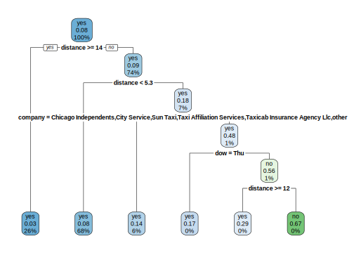
Learn more at https://www.tmwr.org/explain.html
Your turn
For the fitted logistic regression model, use
augment, thenglanceandtidy. What happens with each?

PART 4: Metrics for model performance
In the following we will be working on evaluation metrics based on the training set data, but keep in mind that you also need to run the metrics on the test data. If you fail to do so, it can give a misleading impression of model performance. Hopefully this will be clearer soon.
```{r taxi-fit-augment}
augment(tree_fit, new_data = taxi_train) %>%
relocate(tip, .pred_class, .pred_yes, .pred_no)
```#> # A tibble: 8,000 × 10
#> tip .pred_class .pred_yes .pred_no distance company local dow month hour
#> <fct> <fct> <dbl> <dbl> <dbl> <fct> <fct> <fct> <fct> <int>
#> 1 yes yes 0.967 0.0333 17.2 Chicag… no Thu Feb 16
#> 2 yes yes 0.917 0.0830 0.88 City S… yes Thu Mar 8
#> 3 yes yes 0.967 0.0333 18.1 other no Mon Feb 18
#> 4 yes yes 0.858 0.142 12.2 Chicag… no Sun Mar 21
#> 5 yes yes 0.917 0.0830 0.94 Sun Ta… yes Sat Apr 23
#> 6 yes yes 0.967 0.0333 17.5 Flash … no Fri Mar 12
#> 7 yes yes 0.967 0.0333 17.7 other no Sun Jan 6
#> 8 yes yes 0.917 0.0830 1.85 Taxica… no Fri Apr 12
#> 9 yes yes 0.917 0.0830 0.53 Sun Ta… no Tue Mar 18
#> 10 yes yes 0.858 0.142 6.65 Taxica… no Sun Apr 11
#> # ℹ 7,990 more rowsConfusion matrix
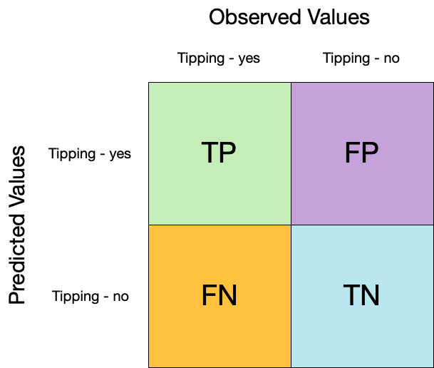
conf_mat() can be used to see how well the model is doing at prediction
```{r conf-mat-plot}
augment(tree_fit, new_data = taxi_train) %>%
conf_mat(truth = tip, estimate = .pred_class) %>%
autoplot(type = "heatmap")
```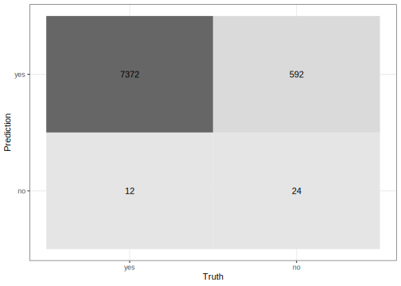
Accuracy
This is a straightforward measure of the proportion of correct predictions out of all predictions.
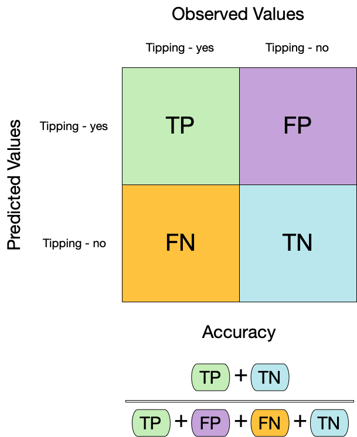
```{r acc-2}
augment(tree_fit, new_data = taxi_train) %>%
mutate(.pred_class = factor("yes", levels = c("yes", "no"))) %>%
accuracy(truth = tip, estimate = .pred_class)
```#> # A tibble: 1 × 3
#> .metric .estimator .estimate
#> <chr> <chr> <dbl>
#> 1 accuracy binary 0.923We need to be careful of using accuracy() since it can give “good” performance by only predicting one way with imbalanced data
Sensitivity
Where accuracy provides a quick understanding of how often the model is correct, sensitivity is an important measure when the cost of missing a positive case (false negative) is high. In our scenario, a positive case is the outcome variable coded as “1” (tip: yes). In other scenarios, this is more consequential (such as correctly predicting the percentage of sick people who have some targeted condition).
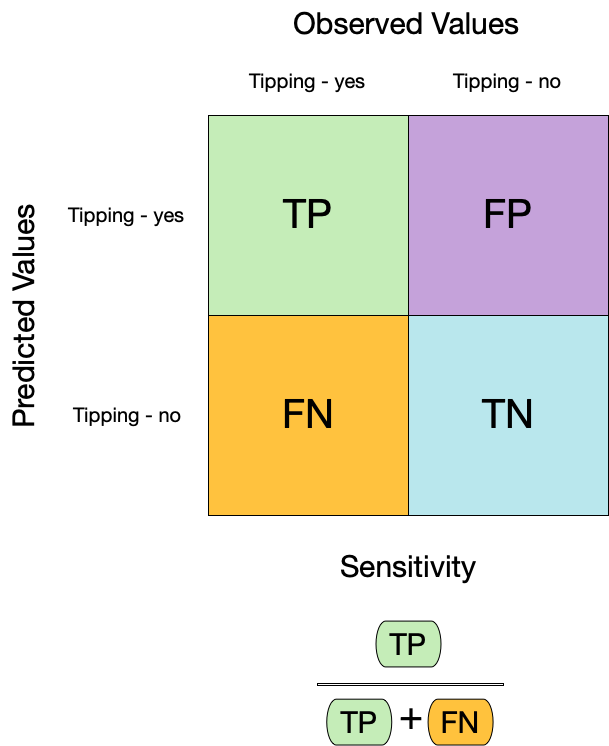
```{r sens}
augment(tree_fit, new_data = taxi_train) %>%
sensitivity(truth = tip, estimate = .pred_class)
```#> # A tibble: 1 × 3
#> .metric .estimator .estimate
#> <chr> <chr> <dbl>
#> 1 sensitivity binary 0.998Specificity
This is essentially the compliment of sensitivity. Specificity is an important measure of how well the model correctly predicts the true negative. In our scenario, a true negative is the outcome variable coded as “0” (tip: no). Pay attention to specificity when the cost of a false positive is high (like convicting an innocent person).

```{r spec}
augment(tree_fit, new_data = taxi_train) %>%
specificity(truth = tip, estimate = .pred_class)
```#> # A tibble: 1 × 3
#> .metric .estimator .estimate
#> <chr> <chr> <dbl>
#> 1 specificity binary 0.0390Combining the metrics
We can use metric_set() to combine multiple calculations into a single table
```{r taxi-metrics}
taxi_metrics <- metric_set(accuracy, specificity, sensitivity)
augment(tree_fit, new_data = taxi_train) %>%
taxi_metrics(truth = tip, estimate = .pred_class)
```#> # A tibble: 3 × 3
#> .metric .estimator .estimate
#> <chr> <chr> <dbl>
#> 1 accuracy binary 0.924
#> 2 specificity binary 0.0390
#> 3 sensitivity binary 0.998All yardstick metric functions work with grouped data frames!
```{r taxi-metrics-grouped}
taxi_metrics <- metric_set(accuracy, specificity, sensitivity)
augment(tree_fit, new_data = taxi_train) %>%
group_by(local) %>%
taxi_metrics(truth = tip, estimate = .pred_class)
```#> # A tibble: 6 × 4
#> local .metric .estimator .estimate
#> <fct> <chr> <chr> <dbl>
#> 1 yes accuracy binary 0.893
#> 2 no accuracy binary 0.932
#> 3 yes specificity binary 0.0181
#> 4 no specificity binary 0.0467
#> 5 yes sensitivity binary 1
#> 6 no sensitivity binary 0.998Your turn
Compute a confusion matrix for your logistic model and produce a table that shows its accuracy, specificity, sensitivity scores
These metrics assume that we know the threshold for converting “soft” probability predictions into “hard” class predictions.
Is a 50% threshold good?
What happens if we say that we need to be 80% sure to declare an event?
- sensitivity ⬇️, specificity ⬆️ In other words: more likely to predict negatives(no tips)
What happens for a 20% threshold?
- sensitivity ⬆️, specificity ⬇️ In other words: more likely to predict positives(yes tips)
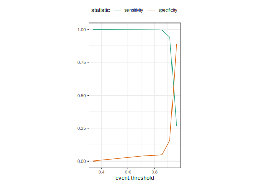
ROC curves
An ROC (receiver operator characteristic) curve is a graphical plot that illustrates the diagnostic ability of a binary classifier system.
It primarily:
- Calculates the sensitivity and specificity for all possible thresholds. It helps you (in a visual way) understand whether a model is optimally balancing sensitivity and specificity in a way that makes sense
It is created by:
- Plotting true positive rate (TPR, or sensitivity) against the false positive rate (FPR, 1-sensitivity) at various threshold settings
- In other words: plotting the rate in which the models correctly predict “tip=yes” and the rate in which the models mistakenly predict that “tip=yes” at various points above which a prediction is considered to be of the positive class.
Given that sensitivity is the true positive rate, and specificity is the true negative rate. Hence 1 - specificity is the false positive rate.
Here’s the ROC curve for our model based on the training data:
```{r roc-curve}
#| fig-width: 6
#| fig-height: 6
#| output-location: "column"
augment(tree_fit, new_data = taxi_train) %>%
roc_curve(truth = tip, .pred_yes) %>%
autoplot() +
labs(x="FPR, 1-specificity", y="TPR, or sensitivity")
```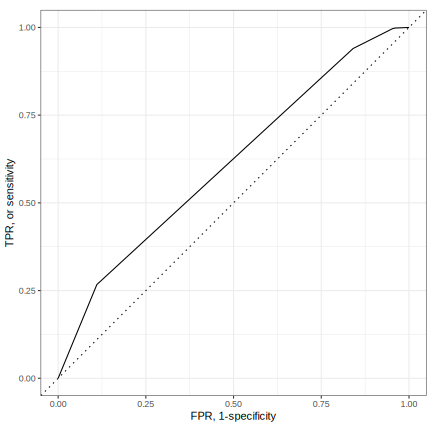
How do we interpret:
A high Area Under the Curve (AUC) indicates that for the majority of thresholds, the TPR (sensitivity) was high and the FPR was low. It means that the model has a good measure of separability and is capable of distinguishing between the positive and negative classes across a wide range of thresholds.
ROC AUC = 1 💯
ROC AUC = 1/2 😢
Let’s get the actual value for AUC:
```{r roc-auc}
augment(tree_fit, new_data = taxi_train) %>%
roc_auc(truth = tip, .pred_yes)
```#> # A tibble: 1 × 3
#> .metric .estimator .estimate
#> <chr> <chr> <dbl>
#> 1 roc_auc binary 0.611ROC curves are insensitive to class imbalance.
When you look at a ROC curve, each point corresponds to a threshold, but the curve itself does not tell you what these thresholds are. To find out, you would need to refer back to the data used to create the ROC curve.
Your turn
Compute and plot an ROC curve for your logistic model
PART 5: Using resampling to estimate performance
⚠️ Dangers of Overfitting ⚠️
Models can easily be overfitted to the training data, meaning they perform well on the training data but poorly on unseen data.
Fitting to your training data

Problems when generalizing to test data

Is our model doing well on training but poorly on new data?
Here’s our model performance on the training data
```{r augment-train}
tree_fit %>%
augment(taxi_train)
```#> # A tibble: 8,000 × 10
#> .pred_class .pred_yes .pred_no tip distance company local dow month hour
#> <fct> <dbl> <dbl> <fct> <dbl> <fct> <fct> <fct> <fct> <int>
#> 1 yes 0.967 0.0333 yes 17.2 Chicag… no Thu Feb 16
#> 2 yes 0.917 0.0830 yes 0.88 City S… yes Thu Mar 8
#> 3 yes 0.967 0.0333 yes 18.1 other no Mon Feb 18
#> 4 yes 0.858 0.142 yes 12.2 Chicag… no Sun Mar 21
#> 5 yes 0.917 0.0830 yes 0.94 Sun Ta… yes Sat Apr 23
#> 6 yes 0.967 0.0333 yes 17.5 Flash … no Fri Mar 12
#> 7 yes 0.967 0.0333 yes 17.7 other no Sun Jan 6
#> 8 yes 0.917 0.0830 yes 1.85 Taxica… no Fri Apr 12
#> 9 yes 0.917 0.0830 yes 0.53 Sun Ta… no Tue Mar 18
#> 10 yes 0.858 0.142 yes 6.65 Taxica… no Sun Apr 11
#> # ℹ 7,990 more rows```{r augment-acc}
tree_fit %>%
augment(taxi_train) %>%
accuracy(tip, .pred_class)
```#> # A tibble: 1 × 3
#> .metric .estimator .estimate
#> <chr> <chr> <dbl>
#> 1 accuracy binary 0.924Here’s our model performance on the test data (unseen data)
```{r augment-acc-test}
tree_fit %>%
augment(taxi_test) %>%
accuracy(tip, .pred_class)
```#> # A tibble: 1 × 3
#> .metric .estimator .estimate
#> <chr> <chr> <dbl>
#> 1 accuracy binary 0.914Better to fit on training data via a process of resampling
Resampling is basically an empirical simulation system used to understand how well the model would work on new data. It’s a more robust estimate of the model’s performance
V-fold (K-fold) Cross-validation
- We want to repeatedly sample (“fold”) the training data to create unique subsets (e.g., Resample 1, Resample 2, Resample B) for analysis and assessment

- Here, we randomly split the training data into V (or K) distinct blocks of roughly equal size (AKA the “folds”)

- In Fold 1:
- We leave out the first block of analysis data and fit a model
- This model is used to predict the held-out block of assessment data
- We continue this process until we’ve predicted all V assessment blocks
- This process ensures that every observation from the original dataset has the chance of appearing in the analysis and assessment set

Efficient use of data: When the amount of data is limited, it’s a way to use every data point in both the training and validation
Model tuning: Useful method for selecting the model with the best tuning parameters (hyperparameters). You can perform cross-validation for various combinations of parameters and choose the one that performs best.
Comparing models What if we want to compare more models to see if there are important differences? Cross-validation allows us to do just this with just the training data
Your turn
If we use 10 folds, what percent of the training data ends up in ANALYSIS for each fold? for ASSESSMENT for each fold?
Let’s do some cross-validation
```{r vfold-cv}
vfold_cv(taxi_train) # v = 10 is default
```#> # 10-fold cross-validation
#> # A tibble: 10 × 2
#> splits id
#> <list> <chr>
#> 1 <split [7200/800]> Fold01
#> 2 <split [7200/800]> Fold02
#> 3 <split [7200/800]> Fold03
#> 4 <split [7200/800]> Fold04
#> 5 <split [7200/800]> Fold05
#> 6 <split [7200/800]> Fold06
#> 7 <split [7200/800]> Fold07
#> 8 <split [7200/800]> Fold08
#> 9 <split [7200/800]> Fold09
#> 10 <split [7200/800]> Fold10What is in this?
```{r taxi-splits}
taxi_folds <- vfold_cv(taxi_train)
taxi_folds$splits[1:3]
```#> [[1]]
#> <Analysis/Assess/Total>
#> <7200/800/8000>
#>
#> [[2]]
#> <Analysis/Assess/Total>
#> <7200/800/8000>
#>
#> [[3]]
#> <Analysis/Assess/Total>
#> <7200/800/8000>These separate sets are in a list column, which is a way to store non-atomic types in a dataframe
We can do this with how many folds we want
```{r vfold-cv-v}
vfold_cv(taxi_train, v = 5)
```#> # 5-fold cross-validation
#> # A tibble: 5 × 2
#> splits id
#> <list> <chr>
#> 1 <split [6400/1600]> Fold1
#> 2 <split [6400/1600]> Fold2
#> 3 <split [6400/1600]> Fold3
#> 4 <split [6400/1600]> Fold4
#> 5 <split [6400/1600]> Fold5Stratification often helps, with very little downside
```{r vfold-cv-strata}
vfold_cv(taxi_train, strata = tip)
```#> # 10-fold cross-validation using stratification
#> # A tibble: 10 × 2
#> splits id
#> <list> <chr>
#> 1 <split [7200/800]> Fold01
#> 2 <split [7200/800]> Fold02
#> 3 <split [7200/800]> Fold03
#> 4 <split [7200/800]> Fold04
#> 5 <split [7200/800]> Fold05
#> 6 <split [7200/800]> Fold06
#> 7 <split [7200/800]> Fold07
#> 8 <split [7200/800]> Fold08
#> 9 <split [7200/800]> Fold09
#> 10 <split [7200/800]> Fold10We’ll use this setup:
Set the seed when creating resamples
```{r taxi-folds}
set.seed(123)
taxi_folds <- vfold_cv(taxi_train, v = 10, strata = tip)
taxi_folds
```#> # 10-fold cross-validation using stratification
#> # A tibble: 10 × 2
#> splits id
#> <list> <chr>
#> 1 <split [7200/800]> Fold01
#> 2 <split [7200/800]> Fold02
#> 3 <split [7200/800]> Fold03
#> 4 <split [7200/800]> Fold04
#> 5 <split [7200/800]> Fold05
#> 6 <split [7200/800]> Fold06
#> 7 <split [7200/800]> Fold07
#> 8 <split [7200/800]> Fold08
#> 9 <split [7200/800]> Fold09
#> 10 <split [7200/800]> Fold10Fit our model to the resamples!
We will fit 10 models on 10 slightly different analysis sets.
```{r fit-resamples}
taxi_res <- fit_resamples(tree_wflow, taxi_folds)
taxi_res
```#> # Resampling results
#> # 10-fold cross-validation using stratification
#> # A tibble: 10 × 4
#> splits id .metrics .notes
#> <list> <chr> <list> <list>
#> 1 <split [7200/800]> Fold01 <tibble [3 × 4]> <tibble [0 × 3]>
#> 2 <split [7200/800]> Fold02 <tibble [3 × 4]> <tibble [0 × 3]>
#> 3 <split [7200/800]> Fold03 <tibble [3 × 4]> <tibble [0 × 3]>
#> 4 <split [7200/800]> Fold04 <tibble [3 × 4]> <tibble [0 × 3]>
#> 5 <split [7200/800]> Fold05 <tibble [3 × 4]> <tibble [0 × 3]>
#> 6 <split [7200/800]> Fold06 <tibble [3 × 4]> <tibble [0 × 3]>
#> 7 <split [7200/800]> Fold07 <tibble [3 × 4]> <tibble [0 × 3]>
#> 8 <split [7200/800]> Fold08 <tibble [3 × 4]> <tibble [0 × 3]>
#> 9 <split [7200/800]> Fold09 <tibble [3 × 4]> <tibble [0 × 3]>
#> 10 <split [7200/800]> Fold10 <tibble [3 × 4]> <tibble [0 × 3]>
Bootstrapping
Assess model accuracy and stability
From your original training dataset, create many (often thousands) of new “bootstrap” training datasets by sampling with replacement.

- After running the bootstrap process many times, you’ll end up with a distribution of performance metrics (like accuracy or AUC).
Handling Small Datasets: It is particularly useful when dealing with small datasets where you might not be able to afford to set aside a portion of the data as a test set.
Uncertainty Estimates: It provides a way to create confidence intervals for various performance metrics, giving a sense of how uncertain those metrics are.
```{r bootstraps}
set.seed(3214)
bootstraps(taxi_train)
```#> # Bootstrap sampling
#> # A tibble: 25 × 2
#> splits id
#> <list> <chr>
#> 1 <split [8000/2902]> Bootstrap01
#> 2 <split [8000/2916]> Bootstrap02
#> 3 <split [8000/3004]> Bootstrap03
#> 4 <split [8000/2979]> Bootstrap04
#> 5 <split [8000/2961]> Bootstrap05
#> 6 <split [8000/2962]> Bootstrap06
#> 7 <split [8000/3026]> Bootstrap07
#> 8 <split [8000/2926]> Bootstrap08
#> 9 <split [8000/2972]> Bootstrap09
#> 10 <split [8000/2972]> Bootstrap10
#> # ℹ 15 more rowsYour turn
Now run
vfold_cvto get 10 splits and refit your logistic regression workflow (usingfit_resamples)

Evaluating model performance
- The goal of resampling is to produce a single estimate of performance for a model
- The final performance is based on the hold-out predictions by averaging the statistics from the V folds.
Even though we end up estimating V models, these models are discarded after we have our performance estimate. 🗑
```{r collect-metrics}
taxi_res %>%
collect_metrics()
```#> # A tibble: 3 × 6
#> .metric .estimator mean n std_err .config
#> <chr> <chr> <dbl> <int> <dbl> <chr>
#> 1 accuracy binary 0.923 10 0.00320 Preprocessor1_Model1
#> 2 brier_class binary 0.0699 10 0.00262 Preprocessor1_Model1
#> 3 roc_auc binary 0.592 10 0.0126 Preprocessor1_Model1We can reliably measure performance using only the training data 🎉
collect_metrics() is one of a suite of collect_*() functions that can be used to work with columns of tuning results. Most columns in a tuning result prefixed with . have a corresponding collect_*() function with options for common summaries.
Your turn
Use
collect_metrics()to get a single estimates of performance on your cross-validated logistic regressionGenerate a new confusion matrix for your cross-validated logistic regression
Does our model perfomance change when fit once on the training data vs resampling on the training data?
Do you remember this from way back when? This is the ROC AUC from no resampling:
```{r roc-auc-2}
augment(tree_fit, new_data = taxi_train) %>%
roc_auc(truth = tip, .pred_yes)
```#> # A tibble: 1 × 3
#> .metric .estimator .estimate
#> <chr> <chr> <dbl>
#> 1 roc_auc binary 0.611Now, this is from resampling:
```{r}
taxi_res %>%
collect_metrics() %>%
select(.metric, mean, n)
```#> # A tibble: 3 × 3
#> .metric mean n
#> <chr> <dbl> <int>
#> 1 accuracy 0.923 10
#> 2 brier_class 0.0699 10
#> 3 roc_auc 0.592 10Lesson is that the fitting a model on just the training set (without resampling) gives you overly optimistic metrics ⚠️
What you would report
- Training Performance (Cross-Validation):
- Present metrics that summarize the model’s performance across the folds
- mean and standard deviation of accuracy
- AUC
- sensitivity
- specificity
- Present metrics that summarize the model’s performance across the folds
This gives an indication of how well the model is expected to perform on unseen data, taking into account the variability due to different subsets of the training data.
- Test Set Performance:
```{r}
taxi_metrics <- metric_set(accuracy, specificity, sensitivity)
augment(tree_fit, new_data = taxi_test) %>%
taxi_metrics(truth = tip, estimate = .pred_class)
```#> # A tibble: 3 × 3
#> .metric .estimator .estimate
#> <chr> <chr> <dbl>
#> 1 accuracy binary 0.914
#> 2 specificity binary 0.0457
#> 3 sensitivity binary 0.997```{r}
augment(tree_fit, new_data = taxi_test) %>%
roc_auc(truth = tip, .pred_yes)
```#> # A tibble: 1 × 3
#> .metric .estimator .estimate
#> <chr> <chr> <dbl>
#> 1 roc_auc binary 0.602The performance metrics derived from the held-out test set give the reader an understanding of how the model performs on completely unseen data. This is the ultimate test of the model’s generalizability and is often considered the most important set of metrics to report.
- Overfitting Discussion
Discuss any signs of overfitting observed (for instance, if there was a large discrepancy between the cross-validation performance and the test set performance).
- Model Interpretability
It’s often important to discuss what the model’s parameters or predictions mean in the context of the subject area.
Your turn
Generate a final report for your regression logistic model, but now using the test set
Completing the whole game
PART 6: Next Steps?
Random forest 🌳🌲🌴🌵🌳🌳🌴🌲🌵🌴🌳🌵
- Ensemble many decision tree models
- All the trees vote! 🗳️
- Bootstrap aggregating + random predictor sampling
Model tuning
- Requires tuning model parameters with more advanced machine learning methods
- Growing phase; tree pruning
- Grid search
- Iterative search
- Nice resource: https://topepo.github.io/2022-nyr-workshop/5-tuning.html#1
- Growing phase; tree pruning
Variable importance
vippackage